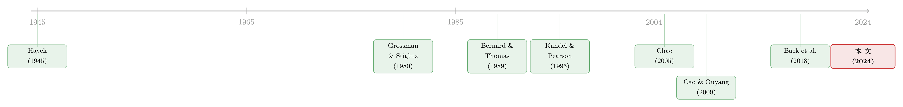

分歧的两副面孔：当投资者争的不是「数字」，而是「数字有多可信」
本文读的是 Huang, Lunawat & Wang (2024, Journal of Financial Economics)：当投资者对一份公开信号（比如财报盈余）的质量/精度看法不一时，这种分歧会在公告之前压低价格的信息含量、在公告之后反而抬高它。正是这一「先抑后扬」的反转，统一解释了盈余公告前后的三件经验事实——知情交易的跳升、成交量的「暴风雨前的宁静」，以及股价对盈余的「反应不足」。
1 一个被忽略的分歧
关于「投资者分歧」，我们已经有了一套相当成熟的直觉。两个人看到同一条消息，一个解读成利好，一个解读成利空，于是一个买、一个卖，成交量起来了——这就是经典的「意见分歧 (differences of opinion)」故事。在这个故事里，大家争的是消息本身的含义：盈余到底是好是坏？前景到底是亮是暗？
但请你停下来想一想：现实里投资者真正争论的，往往不是那个数字本身，而是那个数字到底有多可信。
这并不是吹毛求疵。Dichev et al. (2013) 直接去问 CFO，得到的回答是：他们估计盈余质量里大约只有 50% 来自经济基本面，剩下 50% 来自管理层的报告裁量权。换句话说，财报这个「公开信号」天生就掺了水，而每个投资者对「掺了多少水」的判断各不相同——老练的机构能识别出应计与真实盈余管理，散户却可能被复杂的报表绕晕。Hodge (2003) 的问卷、Huang et al. (2023) 对电话会议中分析师「怀疑程度」的度量，都指向同一件事：人们对盈余质量的看法，是分歧的。
于是一个自然的问题是：这种「对信号精度的分歧」，和我们熟悉的「对信号含义的分歧」，会不会是两种完全不同的东西？它会怎样改变市场？
这正是本文要回答的。而它给出的答案有点反直觉：对信号质量的分歧，居然能让价格在公告后变得更「聪明」。
2 三件需要被统一解释的事实
在动手建模之前，作者先把靶子立清楚。盈余公告前后，实证文献反复记录了三个现象：
第一，知情交易在公告后显著跳升。 价格里被「吸收」进去的私人信息，公告之后远多于之前（Back et al., 2018；Brennan et al., 2018）。
第二，成交量呈现「暴风雨前的宁静」。 异常成交量在公告前会掉到负值，公告那一刻却猛地放量（Chae, 2005）。而且 Sammon (2022) 发现，这种「公告前的萎缩」近年来还在加剧。
第三，股价对盈余「反应不足」。 这就是大名鼎鼎的盈余公告后漂移 (post-earnings-announcement drift, PEAD)——价格没有一步到位，而是慢慢地朝着盈余暗示的方向继续漂（Bernard and Thomas, 1989）。
这三件事，过去人们往往各找各的解释。本文的野心在于：用一个机制把它们一次性串起来。而那个机制，就是投资者对公开信号精度的分歧。
作者特别强调：任何单一现象都识别不出「对盈余质量的分歧」——别的异质性（先验不同、私人信号精度不同、对信号偏差的分歧）也能复制其中某一条。但能同时生出这三条的，几乎只有「对精度的分歧」。这是一种「联合识别」的思路。
3 模型：一个被公告劈成两半的理性预期均衡
这是一篇彻头彻尾的理论论文，所以我们必须把模型讲清楚——它的精巧之处，恰恰藏在几个看似平淡的设定里。
时间与资产。 模型有三天，\(t=1,2,3\)。第 1、2 天是两个连续的交易期，第 3 天所有不确定性揭晓。无风险资产价格与毛收益率都标准化为 1。股票在第 3 天的清算价值是
$$ v=\theta+\epsilon, $$
其中 \(\theta\sim(\bar{\theta},\gamma^{-1})\) 是股票可学习的基本面 (learnable fundamentals)，而 \(\epsilon\sim(0,\tau^{-1})\) 是谁也学不到的残差不确定性 (residual uncertainty)。这个 \(\epsilon\) 是后文一切的关键，先记住它。
公开信号。 第 2 天伊始，市场收到一个关于基本面的公开信号（你就把它当成财报盈余）：
$$ y=\theta+\zeta,\qquad \zeta\sim(0,\alpha^{-1}). $$
这里 \(\alpha\) 衡量信号的精度/质量——\(\alpha\) 越大，信号越干净。正是这个公开信号，把第 1 天（消息前 (pre-news)）和第 2 天（消息后 (post-news)）劈成了两段。
投资者。 每期都有一代「只活一期」的短视投资者，测度为 1，持有 CARA 效用 \(\mathbb{E}[-e^{-C/\rho}]\)，\(\rho\) 是风险容忍度。关键差别在于他们的投资回报是什么：
$$ C_{1i}=D_{1i}(p_2-p_1)+W_0,\qquad C_{2i}=D_{2i}(v-p_2)+W_0. $$
第 2 天的投资者持股到清算，所以她的回报盯着 \(v\)；而第 1 天的投资者下一期就得平仓，所以她的回报盯着第 2 天的价格 \(p_2\)。这一步至关重要：day-1 投资者赚的是价差，而 \(p_2\) 里嵌着公开信号 \(y\)，也就嵌着那个学不到的噪声 \(\zeta\)。
每个投资者有一个私人信号 \(x_{ti}=\theta+\xi_{ti}\)，\(\xi_{ti}\sim(0,\beta^{-1})\)；每期还有一个供给冲击 \(s_t\sim(0,\eta^{-1})\) 来制造噪声、防止价格完全揭示信息。
分歧（本文的灵魂设定）。 每个 day-\(t\) 投资者 \(i\) 对公开信号精度有一个主观意见 \(\alpha_{ti}\in(\underline\alpha,\bar\alpha)\)，服从分布 \(F_t\)。这里有一个微妙但干净的处理——「同意彼此不同意 (agree to disagree)」：每个人都坚信自己的 \(\alpha_{ti}\) 是对的，同时知道别人抽自分布 \(F_t\)，于是谁也不会去更新对精度的信念。作者把「分歧加大」精确定义为意见分布 \(F_t\) 发生均值保持的展宽 (mean-preserving spread, MPS)——均值不变，但更分散。
「均值保持的展宽」这个定义是后面所有比较静态分析的支点：它让我们能干净地问「仅仅是分歧变大、而平均看法不变，会怎样」，从而把分歧的效应和「平均更乐观/更悲观」彻底分开。
4 关键一步：交易强度，是「精度」的什么函数？
均衡求解走的是标准的理性预期均衡 (rational expectations equilibrium, REE) 路子。先猜两期的定价函数：
$$ P_1=a_1+b_1\theta-e_1 s_1, $$ $$ P_2=a_2+b_2\theta+c_2 y+d_2 p_1-e_2 s_2. $$
day-2 投资者能从两期价格里剥出两个价格信号 \(q_1,q_2\)，作者定义
$$ z_t=\frac{b_t}{e_t} $$
为第 \(t\) 天的信息价格效率 (informational price efficiency)——\(z_t\) 越大，价格里关于基本面 \(\theta\) 的信息越足（这个概念沿用 Cespa and Vives, 2015）。
day-2 投资者的需求是标准的 CARA 形式 \(D_{2i}=\rho(\mathbb{E}_{2i}[v\mid\mathcal I_{2i}]-p_2)/\mathbb V_{2i}[v\mid\mathcal I_{2i}]\)，其中
$$ \mathbb{E}_{2i}[v\mid\mathcal I_{2i}]=\frac{\gamma\bar\theta+\beta x_{2i}+\alpha_{2i}y+z_1^2\eta\,q_1+z_2^2\eta\,q_2}{\gamma+\beta+\alpha_{2i}+z_1^2\eta+z_2^2\eta}, $$ $$ \mathbb V_{2i}[v\mid\mathcal I_{2i}]=\big(\gamma+\beta+\alpha_{2i}+z_1^2\eta+z_2^2\eta\big)^{-1}+\tau^{-1}. $$
把它代入市场出清、匹配系数，就得到全文最核心的一条刻画方程——
这条方程在说一件朴素的事：信息价格效率 \(z_2\)，等于全市场对私人信号交易强度的平均值。 价格之所以「聪明」，是因为大家把私人信息通过交易写进了价格。
现在，真正关键的一步来了。盯住注释 a2 里那个交易强度——把它看作 \(\alpha_{2i}\) 的函数 \(t(\alpha)=\rho\beta/[1+(\gamma+\beta+\alpha+Z)\tau^{-1}]\)（\(Z\) 是与 \(\alpha\) 无关的常数项）。它是 \(\alpha\) 的递减函数：你越相信公开信号精确，就越不需要押注自己的私人信号——这就是公开信号的「挤出效应 (crowd-out effect)」。更重要的是，它还是凸的：挤出的边际效应递减。
凸函数遇上均值保持的展宽，结论几乎是机械的——由 Jensen 不等式，分布越分散，函数的期望值越高。那些原本就觉得信号很准的人，现在觉得更准，少交易了一点点；但那些原本就觉得信号很水的人，现在觉得更水，多交易了一大截。因为是凸的，「多出来」的压倒「少掉的」。于是：
day-2 投资者分歧越大 → 平均交易强度越高 → \(z_2\) 越大 → 公告后价格越有信息含量。
这就是那个反直觉的结论：分歧，居然让公告后的价格更聪明。
5 同一份分歧，为什么在公告前是反的？
如果故事到此为止，那不过是个 Jensen 不等式的小把戏。本文真正漂亮的地方，是它接着问：那公告前呢？
回到 day-1 投资者。她的处境和 day-2 投资者有一个本质不同：她看不到公开信号 \(y\)，因此无法「在 \(y\) 上交易」。挤出效应对她不适用。但 \(\alpha\) 依然左右着她的行为——因为她赚的是 \(p_2-p_1\)，而 \(p_2\) 里的噪声 \(\zeta\) 是她学不到、也对冲不掉的一块风险。她若觉得公开信号更精确，就等于觉得这块背景风险更小，于是更敢在自己的私人信号上下注。
注意方向反了：在 day 2，精度通过挤出压低私人交易，是递减的；在 day 1，精度通过降低背景风险鼓励私人交易，是递增的。而且作者证明，在均值-方差效用下，day-1 的交易强度是精度的递增且凹 (increasing & concave) 函数。
凹函数遇上均值保持的展宽，Jensen 不等式这次往反方向走：分布越分散，期望值越低。于是：
day-1 投资者分歧越大 → 平均交易强度越低 → \(z_1\) 越小 → 公告前价格越没信息含量。
于是反转出现了。同一种分歧——对公开信号精度的分歧——在公告前压低信息效率，在公告后抬高信息效率。 一个学不到的残差风险 \(\epsilon\)（还记得它吗）保证了挤出效应在 day 2 压过「降风险」效应；而 day 1 投资者「无法在信号上交易、只能承受其噪声」的处境，则让方向彻底掉转。两段市场，两副面孔。
这里有个容易被忽略的技术要点：Lemma 1 证明了 \(z_2\) 是 \(z_1\) 的严格递减函数。也就是说两期信息效率之间还有一层一般均衡的负反馈——公告前价格越笨，公告后投资者反而更依赖自己的私人信号。这让「先抑后扬」的对比被进一步放大。
6 三件事，如何被一次性解释
有了「先抑后扬」这把钥匙，开头那三道锁就接连打开了。
知情交易的跳升。 信息价格效率本就来自私人信号的交易强度，高效率即意味着大量知情交易。分歧让 \(z_1\) 降、\(z_2\) 升，于是知情交易在公告后跳升——正对上 Back et al. (2018) 与 Brennan et al. (2018)。
成交量的「先萎缩、后暴涨」。 作者把总成交量拆成两块：分歧交易（大家看法不同而对赌）与知情交易。分歧总是抬高分歧交易；但它对知情交易的作用，公告前是减、公告后是增。数值分析显示，公告前知情交易这一块的萎缩压过了分歧交易的增加，净效应是成交量下凹；公告后两块齐升，于是放量。这恰好复刻了 Chae (2005) 的「暴风雨前的宁静」。
股价对盈余的反应不足。 公告后分歧抬高 \(z_2\)，价格本身变成了一个更有信息含量的信号，它会反过来「挤出」公开信号 \(y\) 对价格的影响——也就是定价系数 \(c_2\) 变小。day-2 投资者越分歧，价格对盈余越不敏感，于是出现了对盈余的反应不足，与 Bernard and Thomas (1989) 的 PEAD 相呼应。
一个机制，三件事。这就是本文最想钉死的那「一个核心」。
7 文献脉络
把这篇论文放回它的谱系里，线索其实很清晰。
源头是 Hayek (1945) 的洞见——价格是社会知识的聚合器；Grossman and Stiglitz (1980) 把它形式化成「信息越被价格揭示，搜集信息的激励就越弱」的不可能定理，奠定了一切关于「价格信息含量」的讨论。沿着这条线，「信息价格效率」成了一个可以被精确度量的对象（Cespa and Vives, 2015）。
另一条线是「投资者分歧」。传统的意见分歧模型，争的几乎都是信号的一阶矩——要么先验不同，要么对公开信号的均值看法不同（如 Banerjee and Kremer, 2010，研究分歧频率与成交量、波动率的长期序列相关）。Kandel and Pearson (1995) 经典地用「对公开信号的差异化解读」去解释公告时的异常成交量。但真正去碰二阶矩——对信号精度的分歧——的论文极少，Cao and Ouyang (2009) 是其一，不过他们假设投资者没有私人信号，于是无股票交易（除非有期权）。

本文的位置就此显形：它把「对精度的分歧」搬进一个带私人信号、被公告劈成两期的 REE 框架，让分歧得以通过「私人信号交易强度」这个渠道作用于信息价格效率，从而第一次把公告前后的三件事统一在一个机制下。它与本博客介绍过的《分歧本身没那么重要，重要的是「信息质量」在变》是同一片土壤里长出的两株不同的苗——后者讲信息质量随时间变化如何重定价，本文讲投资者对质量的分歧如何重塑信息聚合；也可与《同一份分歧，两副面孔：当债与股都是现金流上的期权》对照着读，体会「分歧」在不同合约结构下的不同投影。而「价格里到底装了多少信息、又有多少是你以为的独家」这层意思，《你以为的「独家消息」，可能整个市场早就知道了》讲得更透。
8 评论与延伸（Q&A + 研究方向）
(a) 几个可能的疑问
Q：「对精度的分歧」和「对均值的分歧」，凭什么是两回事？
因为它们作用的渠道根本不同。对均值的分歧直接制造对赌（你觉得高、我觉得低，于是交易），但不天然地改变大家对私人信号的依赖程度。对精度的分歧则通过贝叶斯权重——你越信公开信号、越不信自己的私人信号——去调节私人信号的交易强度，从而直接搬动信息价格效率。前者动的是成交量，后者动的是价格的「聪明程度」。
Q：分歧让公告后价格更有信息含量，这是不是说「越乱越好」？
不能这么浪漫地读。这里抬高 \(z_2\) 的不是「噪声」，而是 Jensen 不等式下凸性带来的结构性结果：被低估精度的那群人「超额」加注私人信息。而且代价是对称的——同一种分歧在公告前反而压低了 \(z_1\)。所以不是「越乱越好」，而是「分歧把信息聚合在时间上重新分配了」。
Q：为什么 day-1 和 day-2 的方向会反？关键到底卡在哪？
卡在两点。其一，day-1 投资者看不到 \(y\)，无法在它上面交易，所以挤出效应缺席，只剩「精度高 → 背景风险低 → 敢加注」的递增渠道。其二，残差不确定性 \(\epsilon\)（即 \(\tau^{-1}\)）保证了在 day 2 挤出效应压过降风险效应。一个「看不见信号」，一个「学不到的残差」，共同把符号掰反。
Q：「同意彼此不同意、永不更新」这个设定，是不是太强了？
这是一个建模上的取舍。它的好处是干净——投资者的主观精度被钉死，比较静态完全归因于分布 \(F_t\) 的展宽，而非动态学习的混杂。代价是排除了「随着公告临近，分歧自我收敛」这类现实动态。作者也在长寿命投资者的版本里检验过，效应定性不变，说明结论不靠这个特定的「短视」假设。
Q：这三个预测真能识别出「对精度的分歧」吗，会不会别的机制也能复制？
作者很诚实：任何单一现象都识别不了——先验异质、私人信号精度分散、对信号偏差的分歧，都能复制其中某一条。但作者论证，这些替代机制都无法同时生出全部三条。所以识别力来自「三条一起出现」这个联合事件，而不是任何单独一条。这也是全文方法论上最值得学的一招。
Q：模型说价格对盈余「反应不足」，可这是均衡里的理性结果，和行为金融讲的 PEAD 是一回事吗？
机制不同。行为解释靠的是注意力不足或信念偏误；本文的反应不足是纯理性的——公告后价格自身变得更有信息含量，价格信号「挤出」了公开信号对定价的边际贡献，于是 \(c_2\) 变小、价格对 \(y\) 不敏感。它给 PEAD 提供了一个不依赖非理性的补充叙事。
(b) 几个可能的研究问题与提案
1. 把「对精度的分歧」搬进公司债市场。
【经济故事】评级和财报对债券投资者同样是「质量不一」的公开信号，而信用市场里机构与散户、做市商与买方对「信息可信度」的分歧可能比股市更大。本文的「先抑后扬」预测在债券价格发现、公告前后的买卖价差与成交上是否同样成立？ 【可行性】中。TRACE 提供成交与价差，评级行动/盈余公告给事件窗口；难点在于度量「对精度的分歧」——可借分析师预测离散度、评级机构间分歧作代理。识别靠事件研究+横截面，doable，但代理变量的争议需要正面处理。
2. AI 与算法交易如何放大「对精度的分歧」。
【经济故事】作者在引言里点到：随着 AI 普及，处理信息能力的差距（高频算法 vs. 慢速深度学习模型）可能进一步拉大对信息质量的分歧。那么算法交易渗透率更高的股票，公告前的成交量萎缩是否更深、公告后的知情交易跳升是否更猛？ 【可行性】中。算法/高频交易强度有现成代理（如订单撤改率、报价更新频率）；可用 Reg NMS 等制度变更或交易所技术升级作为外生冲击做 DiD。挑战在于把「分歧」从「单纯的速度优势」中剥离出来。
3. 外资持有人是否构成一类系统性的「精度分歧」来源。
【经济故事】外国投资者与本土投资者在解读本地财报、披露规范上的能力天然不同，这正是一种对「信号质量」的结构性分歧。外资占比高的股票，盈余公告前后的信息价格效率轨迹是否更符合本文的「先抑后扬」？ 【可行性】中到高。FactSet/EPFR 提供外资持股，跨国财报披露质量有现成指数；可用指数纳入（如 MSCI 纳入 A 股）作为外资占比的外生跳变做事件研究。数据齐备，识别清晰，是较 doable 的一支。
4. 直接度量「分歧的二阶矩」并检验交易强度的凸/凹性。
【经济故事】本文全部反转都押在「day-2 交易强度对精度递减且凸、day-1 递增且凹」这条微观曲率上。能否用投资者层面的持仓/下单数据，直接估出交易强度对「感知精度」的曲率，验证这块理论基石？ 【可行性】低到中。需要投资者层面的私人信号与主观精度，二者都难观测；或可在实验室/众包平台（参照 Cookson and Niessner, 2020 的社交网络数据思路）构造可控环境。直接做很难，但作为实验研究是有想象空间的。
我的判断
这是一篇「设定极简、结论极清」的好理论。它最大的贡献不在于又解释了一个异象，而在于用一个机制把三个原本各自为政的经验事实焊在了一起，并且焊点是干净的——全部反转都收敛到一句话：交易强度对感知精度，在 day 2 是递减且凸、在 day 1 是递增且凹。把一个复杂的市场动态压缩成两条曲线的曲率，这是理论应有的样子。
要说担忧，主要在「从模型到数据」这一段。其一，「对精度的分歧」本身极难直接观测，实证检验几乎必然依赖代理变量（分析师预测离散度、解读分歧指标等），而这些代理同时也沾染了「对均值的分歧」，本文赖以立身的「联合识别」在实证里能否守住，存疑——作者自己也只在 Online Appendix 做了初步的横截面检验。其二，「同意彼此不同意、永不更新」是一个很强的封闭假设，它让模型可解，却也回避了「分歧为何存在、又为何不收敛」这个更根本的问题；第 7 节作者引入了内生信息获取来部分回应，但分歧的来源仍是外生给定的。
后续我最想看到的，是有人能找到一个外生改变「对精度分歧」而不改变「对均值分歧」的自然实验——比如某种只影响「信息可信度感知」、不影响「信息内容」的披露制度变更——用它把本文这条优雅的理论预测，真正地、干净地推到数据面前。
参考文献
- Allen, F., Morris, S., Shin, H.S. (2006). Beauty contests and iterated expectations in asset markets. Review of Financial Studies 19, 719–752.
- Back, K., Crotty, K., Li, T. (2018). Identifying information asymmetry in securities markets. Review of Financial Studies 31, 2277–2325.
- Banerjee, S., Kremer, I. (2010). Disagreement and learning: dynamic patterns of trade. Journal of Finance 65, 1269–1302.
- Bernard, V.L., Thomas, J.K. (1989). Post-earnings-announcement drift: delayed price response or risk premium? Journal of Accounting Research 27, 1–36.
- Brennan, M.J., Huh, S.W., Subrahmanyam, A. (2018). High-frequency measures of informed trading and corporate announcements. Review of Financial Studies 31, 2326–2376.
- Cao, H., Ouyang, H. (2009). Differences of opinion of public information and speculative trading in stocks and options. Review of Financial Studies 22, 299–335.
- Cespa, G., Vives, X. (2015). The beauty contest and short-term trading. Journal of Finance 70, 2099–2154.
- Chae, J. (2005). Trading volume, information asymmetry, and timing information. Journal of Finance 60, 413–442.
- Dichev, I., Graham, J., Harvey, C., Rajgopal, S. (2013). Earnings quality: evidence from the field. Journal of Accounting and Economics 56, 1–33.
- Grossman, S.J., Stiglitz, J.E. (1980). On the impossibility of informationally efficient markets. American Economic Review 70, 393–408.
- Hayek, F.A. (1945). The use of knowledge in society. American Economic Review 35, 519–530.
- Hodge, F. (2003). Investors' perceptions of earnings quality, auditor independence, and the usefulness of audited financial information. Accounting Horizons 17, 37–48.
- Kandel, E., Pearson, N.D. (1995). Differential interpretation of public signals and trade in speculative markets. Journal of Political Economy 103, 831–872.